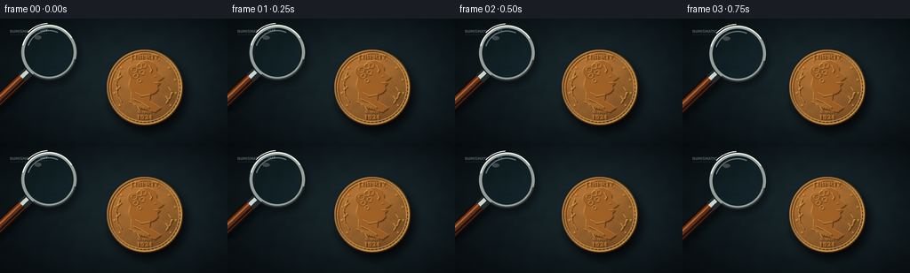
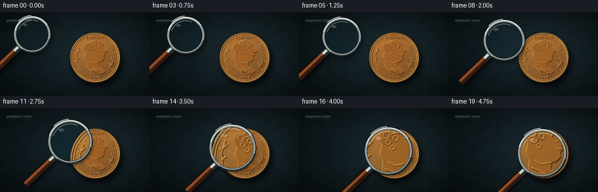
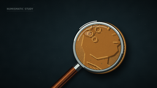

CODING AGENTS AS PIXEL WORLD MODELS
traex/GPT-5.6-Sol · phygen_069
点击播放 · 原生 RGB 像素
逐轮保存的候选
回放视频、检查图与代码变化。
每份候选均可单独播放。实际图片检查记录在下方工具轨迹中。
候选 01播放与检查图
点击播放 · 原生 RGB 像素


展开代码变化
--- 上一保存版本
+++ 本次保存版本
@@ -0,0 +1,222 @@
+from pathlib import Path
+import math
+import numpy as np
+from PIL import Image, ImageDraw, ImageFont, ImageFilter, ImageEnhance
+import artifact_io
+
+# Procedural macro still-life: an aged bronze coin examined by a moving magnifying glass.
+W, H, N = 256, 144, 20
+S = 4
+WW, HH = W*S, H*S
+rng = np.random.default_rng(6901)
+
+def sc(v): return int(round(v*S))
+def xy(p): return tuple(sc(v) for v in p)
+def font(path, size): return ImageFont.truetype(path, sc(size))
+SERIF_B = "/usr/share/fonts/truetype/dejavu/DejaVuSerif-Bold.ttf"
+SERIF = "/usr/share/fonts/truetype/dejavu/DejaVuSerif.ttf"
+SANS_B = "/usr/share/fonts/truetype/dejavu/DejaVuSansCondensed-Bold.ttf"
+
+# Dark blue-black jeweler's work mat, with a broad warm pool of illumination.
+yy, xx = np.mgrid[0:HH, 0:WW]
+x = xx / S; y = yy / S
+lamp = np.exp(-(((x-166)/122)**2 + ((y-65)/91)**2)*1.25)
+vignette = np.clip(1 - 0.46*((x-W/2)/(W*.72))**2 - 0.55*((y-H/2)/(H*.72))**2, .45, 1)
+# multi-scale mottling
+small = Image.fromarray(rng.integers(0,256,(36,64),dtype=np.uint8)).resize((WW,HH), Image.Resampling.BICUBIC).filter(ImageFilter.GaussianBlur(sc(3)))
+mottle = (np.asarray(small).astype(float)-127.5)/127.5
+fine = rng.normal(0,1,(HH,WW))
+base = np.empty((HH,WW,3), dtype=float)
+base[...,0] = 13 + 12*lamp
+base[...,1] = 23 + 17*lamp
+base[...,2] = 27 + 18*lamp
+base += (mottle*3.2 + fine*1.3)[...,None]
+base *= vignette[...,None]
+scene = Image.fromarray(np.uint8(np.clip(base,0,255)), 'RGB')
+
+# Fine scratches and lint embedded in the mat.
+d = ImageDraw.Draw(scene, 'RGBA')
+for i in range(58):
+ x0 = rng.uniform(0,W); y0 = rng.uniform(8,H)
+ length = rng.uniform(2,22)
+ col = (113,137,137,int(rng.uniform(5,18))) if i%3 else (3,8,10,int(rng.uniform(15,28)))
+ d.line((sc(x0),sc(y0),sc(x0+length),sc(y0+rng.uniform(-.5,.5))), fill=col, width=max(1,sc(rng.uniform(.15,.45))))
+for i in range(35):
+ px,py=rng.uniform(0,W),rng.uniform(0,H)
+ r=rng.uniform(.15,.55)
+ d.ellipse((sc(px-r),sc(py-r),sc(px+r),sc(py+r)), fill=(150,166,157,int(rng.uniform(8,25))))
+
+# Coin shadow.
+coin_c = (163, 78); R = 43
+shadow = Image.new('RGBA',(WW,HH),(0,0,0,0)); sd=ImageDraw.Draw(shadow)
+sd.ellipse((sc(coin_c[0]-R+3),sc(coin_c[1]-R+6),sc(coin_c[0]+R+5),sc(coin_c[1]+R+8)), fill=(0,0,0,190))
+shadow=shadow.filter(ImageFilter.GaussianBlur(sc(5)))
+scene=Image.alpha_composite(scene.convert('RGBA'),shadow)
+
+# Textured bronze disc generated per-pixel.
+dx=x-coin_c[0]; dy=y-coin_c[1]; rr=np.sqrt(dx*dx+dy*dy); ang=np.arctan2(dy,dx)
+cmask = rr <= R
+light_dir = (-dx*.53-dy*.85)/R
+rings = np.sin(rr*3.5)*np.exp(-((rr-(R-2))/2.5)**2)
+pits = rng.normal(0,1,(HH,WW))
+# Verdigris-like broad variation
+pat = Image.fromarray(rng.integers(0,256,(24,24),dtype=np.uint8)).resize((WW,HH),Image.Resampling.BICUBIC).filter(ImageFilter.GaussianBlur(sc(2)))
+pat=np.asarray(pat).astype(float)/255-.5
+bronze=np.zeros((HH,WW,4),dtype=np.uint8)
+shade=0.82 + .18*light_dir + .10*(1-rr/R) + .045*pits + .09*pat + .04*rings
+edge=np.clip((R-rr)/2.2,0,1)
+shade *= (.72+.28*edge)
+bronze[...,0]=np.clip(178*shade,0,255)
+bronze[...,1]=np.clip(116*shade,0,255)
+bronze[...,2]=np.clip(54*shade,0,255)
+bronze[...,3]=np.where(cmask,255,0)
+scene=Image.alpha_composite(scene,Image.fromarray(bronze,'RGBA'))
+
+# Coin relief artwork. Each engraved/raised line gets a dark lower-right edge and a pale upper-left edge.
+art=Image.new('RGBA',(WW,HH),(0,0,0,0)); ad=ImageDraw.Draw(art,'RGBA')
+def ellipse_relief(box, width=1.0, fill=None):
+ b=[sc(v) for v in box]; off=sc(.75)
+ if fill:
+ ad.ellipse(tuple(v+off for v in b), fill=(68,35,14,115))
+ ad.ellipse(tuple(v-sc(.45) for v in b), fill=(247,194,106,105))
+ ad.ellipse(b, fill=fill)
+ else:
+ ad.ellipse((b[0]+off,b[1]+off,b[2]+off,b[3]+off), outline=(54,28,10,180), width=sc(width))
+ ad.ellipse((b[0]-sc(.5),b[1]-sc(.5),b[2]-sc(.5),b[3]-sc(.5)), outline=(247,195,107,175), width=sc(width))
+ ad.ellipse(b, outline=(142,82,30,220), width=max(1,sc(width*.45)))
+def line_relief(points,width=1.0):
+ ps=[xy(p) for p in points]
+ ad.line([(a+sc(.7),b+sc(.8)) for a,b in ps], fill=(55,28,10,175), width=sc(width), joint='curve')
+ ad.line([(a-sc(.45),b-sc(.5)) for a,b in ps], fill=(244,188,98,170), width=sc(width), joint='curve')
+ ad.line(ps, fill=(133,76,27,210), width=max(1,sc(width*.35)), joint='curve')
+
+ellipse_relief((121,36,205,120),1.15)
+ellipse_relief((124,39,202,117),.65)
+# rim beads/reeding
+for a in np.linspace(0,2*math.pi,58,endpoint=False):
+ px=coin_c[0]+39.5*math.cos(a); py=coin_c[1]+39.5*math.sin(a)
+ r=.65
+ ad.ellipse((sc(px-r),sc(py-r),sc(px+r),sc(py+r)),fill=(231,168,77,105))
+# Raised classical profile facing right.
+profile=[(153,55),(158,49),(166,47),(173,50),(176,55),(176,60),(181,63),(184,66),(181,69),(178,70),(180,73),(177,76),(178,80),(174,84),(169,86),(168,93),(181,101),(174,106),(156,101),(147,94),(148,83),(145,76),(147,66)]
+# shadow and highlight silhouette
+P=[xy(p) for p in profile]
+ad.polygon([(a+sc(1),b+sc(1.2)) for a,b in P],fill=(57,29,10,160))
+ad.polygon([(a-sc(.55),b-sc(.7)) for a,b in P],fill=(239,178,86,155))
+ad.polygon(P,fill=(159,94,35,190))
+# bun and hair curls
+ellipse_relief((144,53,158,67),.6,(151,88,32,210))
+for cx,cy,rad in [(151,58,3.2),(157,54,3),(162,53,2.7),(153,65,2.5),(160,61,2.4),(157,70,2.2)]:
+ ellipse_relief((cx-rad,cy-rad,cx+rad,cy+rad),.55)
+# face and clothing details
+line_relief([(168,53),(171,58),(169,61)],.65)
+line_relief([(176,65),(173,66)],.55)
+line_relief([(178,73),(174,73)],.5)
+line_relief([(169,86),(159,88),(153,84)],.75)
+line_relief([(150,91),(159,95),(168,101)],1.0)
+line_relief([(145,94),(154,99),(158,104)],.65)
+for k in range(5):
+ line_relief([(147+k*3,94+k*.7),(153+k*3,100+k*.55)],.42)
+# Laurel sprigs framing the portrait.
+line_relief([(137,94),(132,86),(131,72),(135,60)],.75)
+for px,py,rot in [(133,87,-1),(131,81,1),(131,75,-1),(133,68,1),(135,63,-1)]:
+ line_relief([(px,py),(px+(-4 if rot<0 else 4),py-4)],1.15)
+line_relief([(187,96),(192,89),(194,81)],.65)
+for px,py,sg in [(190,92,-1),(192,87,1),(193,82,-1)]:
+ line_relief([(px,py),(px+3*sg,py-4)],1.0)
+# Tiny stars around inner rim.
+for a in np.linspace(math.radians(145), math.radians(395), 11):
+ px=163+35*math.cos(a); py=78+35*math.sin(a)
+ r1,r2=1.75,.72; pts=[]
+ for j in range(10):
+ aa=-math.pi/2+j*math.pi/5; r=r1 if j%2==0 else r2
+ pts.append((px+r*math.cos(aa),py+r*math.sin(aa)))
+ ad.polygon([(sc(q[0]+.6),sc(q[1]+.7)) for q in pts],fill=(57,29,10,150))
+ ad.polygon([xy(q) for q in pts],fill=(226,157,69,170))
+# Coin typography with an embossed offset.
+def embossed_text(pos,text,fnt,anchor='mm'):
+ p=xy(pos)
+ ad.text((p[0]+sc(.65),p[1]+sc(.7)),text,font=fnt,anchor=anchor,fill=(55,27,9,200))
+ ad.text((p[0]-sc(.45),p[1]-sc(.5)),text,font=fnt,anchor=anchor,fill=(246,190,99,185))
+ ad.text(p,text,font=fnt,anchor=anchor,fill=(143,79,26,230),stroke_width=0)
+embossed_text((163,43.5),'LIBERTY',font(SERIF_B,6.2))
+embossed_text((163,112),'1924',font(SERIF_B,6.4))
+embossed_text((163,106),'IN TRUST',font(SERIF,3.0))
+# random oxidation pits on coin atop design
+for i in range(90):
+ a=rng.uniform(0,2*math.pi); rad=R*math.sqrt(rng.uniform(.05,.86))
+ px=coin_c[0]+rad*math.cos(a); py=coin_c[1]+rad*math.sin(a); r=rng.uniform(.10,.42)
+ col=(45,57,35,int(rng.uniform(35,100))) if i%3 else (242,174,75,int(rng.uniform(20,60)))
+ ad.ellipse((sc(px-r),sc(py-r),sc(px+r),sc(py+r)),fill=col)
+scene=Image.alpha_composite(scene,art)
+sharp_scene=scene.convert('RGB')
+# The unaided scene is subtly soft at macro focus; the lens samples the sharp master.
+base_scene=sharp_scene.filter(ImageFilter.GaussianBlur(sc(.23))).convert('RGBA')
+
+# Decorative corner label grounds the shot as a deliberate macro composition.
+label=Image.new('RGBA',(WW,HH),(0,0,0,0)); ld=ImageDraw.Draw(label)
+ld.text(xy((11,12)),'NUMISMATIC STUDY',font=font(SANS_B,4.2),fill=(180,195,192,105))
+ld.line((sc(11),sc(18),sc(54),sc(18)),fill=(177,192,189,70),width=sc(.35))
+base_scene=Image.alpha_composite(base_scene,label)
+sharp_scene=Image.alpha_composite(sharp_scene.convert('RGBA'),label).convert('RGB')
+
+def ease(t): return t*t*(3-2*t)
+frames=[]
+for fi in range(N):
+ t=fi/(N-1); p=ease(t)
+ # A small natural arc carries the lens from upper left to directly over the coin.
+ cx=55 + 105*p
+ cy=38 + 39*p - 5*math.sin(math.pi*p)
+ rad=30 + 10*p
+ mag=1.06 + .72*p
+ frame=base_scene.copy()
+ # Cast shadow: it tightens and darkens as the glass descends toward the coin.
+ sh=Image.new('RGBA',(WW,HH),(0,0,0,0)); sdraw=ImageDraw.Draw(sh,'RGBA')
+ vx,vy=-.72,.69
+ near=(cx+vx*(rad+2),cy+vy*(rad+2)); far=(cx+vx*(rad+67),cy+vy*(rad+67))
+ soffx=3.5-1.6*p; soffy=5.5-2.2*p
+ sdraw.line((sc(near[0]+soffx),sc(near[1]+soffy),sc(far[0]+soffx),sc(far[1]+soffy)),fill=(0,0,0,150),width=sc(12))
+ sdraw.ellipse((sc(cx-rad+soffx),sc(cy-rad+soffy),sc(cx+rad+soffx),sc(cy+rad+soffy)),outline=(0,0,0,135),width=sc(7))
+ sh=sh.filter(ImageFilter.GaussianBlur(sc(3.8-1.6*p)))
+ frame=Image.alpha_composite(frame,sh)
+ # Magnified optical view. Crop a smaller source field and enlarge it to the aperture.
+ src_r=rad/mag
+ box=(sc(cx-src_r),sc(cy-src_r),sc(cx+src_r),sc(cy+src_r))
+ crop=sharp_scene.crop(box).resize((sc(2*rad),sc(2*rad)),Image.Resampling.LANCZOS)
+ crop=ImageEnhance.Contrast(crop).enhance(1.09)
+ # glass gives the image a barely cool optical cast
+ ca=np.asarray(crop).astype(np.float32)
+ ca[...,0]*=.98; ca[...,1]*=1.015; ca[...,2]*=1.035
+ crop=Image.fromarray(np.uint8(np.clip(ca,0,255)),'RGB').convert('RGBA')
+ aperture=Image.new('L',(sc(2*rad),sc(2*rad)),0); ImageDraw.Draw(aperture).ellipse((sc(1),sc(1),sc(2*rad-1),sc(2*rad-1)),fill=242)
+ frame.paste(crop,(sc(cx-rad),sc(cy-rad)),aperture)
+ # glass sheen
+ glass=Image.new('RGBA',(WW,HH),(0,0,0,0)); gd=ImageDraw.Draw(glass,'RGBA')
+ gd.ellipse((sc(cx-rad+2),sc(cy-rad+2),sc(cx+rad-2),sc(cy+rad-2)),fill=(93,168,188,10),outline=(179,231,239,45),width=sc(.6))
+ gd.arc((sc(cx-rad+5),sc(cy-rad+5),sc(cx+rad-5),sc(cy+rad-5)),198,294,fill=(239,255,255,105),width=sc(1.2))
+ gd.ellipse((sc(cx-rad*.55),sc(cy-rad*.63),sc(cx-rad*.28),sc(cy-rad*.48)),fill=(255,255,255,55))
+ frame=Image.alpha_composite(frame,glass)
+ # Handle and ferrule. Rich walnut grip, metal collar, then the circular rim on top.
+ hd=ImageDraw.Draw(frame,'RGBA')
+ near=(cx+vx*(rad-1),cy+vy*(rad-1)); grip0=(cx+vx*(rad+12),cy+vy*(rad+12)); far=(cx+vx*(rad+70),cy+vy*(rad+70))
+ hd.line((*xy(grip0),*xy(far)),fill=(22,12,9,255),width=sc(14))
+ hd.line((*xy(grip0),*xy(far)),fill=(91,46,25,255),width=sc(10))
+ hd.line((*xy((grip0[0]-1.5,grip0[1]-1.5)),*xy((far[0]-1.5,far[1]-1.5))),fill=(173,96,46,145),width=sc(2.0))
+ hd.line((*xy((grip0[0]+2.5,grip0[1]+1.8)),*xy((far[0]+2.5,far[1]+1.8))),fill=(30,15,12,150),width=sc(2.3))
+ hd.line((*xy(near),*xy(grip0)),fill=(36,42,43,255),width=sc(12))
+ hd.line((*xy((near[0]-.8,near[1]-.8)),*xy((grip0[0]-.8,grip0[1]-.8))),fill=(202,213,207,235),width=sc(4.5))
+ # polished steel rim: dark outer edge, warm middle, white highlight
+ hd.ellipse((sc(cx-rad-2.2),sc(cy-rad-2.2),sc(cx+rad+2.2),sc(cy+rad+2.2)),outline=(18,24,25,255),width=sc(5.2))
+ hd.ellipse((sc(cx-rad-1),sc(cy-rad-1),sc(cx+rad+1),sc(cy+rad+1)),outline=(147,158,154,255),width=sc(3.4))
+ hd.arc((sc(cx-rad-1),sc(cy-rad-1),sc(cx+rad+1),sc(cy+rad+1)),195,327,fill=(241,247,237,245),width=sc(1.45))
+ hd.arc((sc(cx-rad-1),sc(cy-rad-1),sc(cx+rad+1),sc(cy+rad+1)),15,125,fill=(53,61,61,250),width=sc(1.55))
+ # tiny rim glint travelling subtly with the motion
+ ga=235+8*math.sin(fi*.35)
+ gd2=ImageDraw.Draw(frame,'RGBA')
+ gd2.arc((sc(cx-rad-3),sc(cy-rad-3),sc(cx+rad+3),sc(cy+rad+3)),224,267,fill=(255,255,246,int(ga)),width=sc(.9))
+ out=frame.convert('RGB').resize((W,H),Image.Resampling.LANCZOS)
+ frames.append(np.asarray(out,dtype=np.uint8))
+
+frames=np.stack(frames)
+artifact_io.save(frames,Path(__file__).resolve().parent)
+print('saved',frames.shape,frames.dtype)
可观测工具轨迹
实际执行的命令与返回图片。
命令 1exit 0
/bin/bash -lc "cat prompt.txt && printf '\\n---GENERATION_RULES---\\n' && cat GENERATION_RULES.md && printf '\\n---TASK_SPEC---\\n' && cat task_spec.json"
命令 2exit 0
/bin/bash -lc "find . -maxdepth 2 -type f -printf '%p\\n' | sort && printf '\\n--- tools ---\\n' && command -v ffmpeg && command -v python3 && command -v blender || true"
命令 3exit 0
/bin/bash -lc "sed -n '1,240p' artifact_io.py"
命令 4exit 0
/bin/bash -lc 'fc-list | head -20'
命令 5exit 1
/bin/bash -lc "cat > generate.py <<'PY'
from pathlib import Path
import math
import numpy as np
from PIL import Image, ImageDraw, ImageFont, ImageFilter, ImageEnhance
import artifact_io
# Procedural macro still-life: an aged bronze coin examined by a moving magnifying glass.
W, H, N = 256, 144, 20
S = 4
WW, HH = W*S, H*S
rng = np.random.default_rng(6901)
def sc(v): return int(round(v*S))
def xy(p): return tuple(sc(v) for v in p)
def font(path, size): return ImageFont.truetype(path, sc(size))
SERIF_B = \"/usr/share/fonts/truetype/dejavu/DejaVuSerif-Bold.ttf\"
SERIF = \"/usr/share/fonts/truetype/dejavu/DejaVuSerif.ttf\"
SANS_B = \"/usr/share/fonts/truetype/dejavu/DejaVuSansCondensed-Bold.ttf\"
# Dark blue-black jeweler's work mat, with a broad warm pool of illumination.
yy, xx = np.mgrid[0:HH, 0:WW]
x = xx / S; y = yy / S
lamp = np.exp(-(((x-166)/122)**2 + ((y-65)/91)**2)*1.25)
vignette = np.clip(1 - 0.46*((x-W/2)/(W*.72))**2 - 0.55*((y-H/2)/(H*.72))**2, .45, 1)
# multi-scale mottling
small = Image.fromarray(rng.integers(0,256,(36,64),dtype=np.uint8)).resize((WW,HH), Image.Resampling.BICUBIC).filter(ImageFilter.GaussianBlur(sc(3)))
mottle = (np.asarray(small).astype(float)-127.5)/127.5
fine = rng.normal(0,1,(HH,WW))
base = np.empty((HH,WW,3), dtype=float)
base[...,0] = 13 + 12*lamp
base[...,1] = 23 + 17*lamp
base[...,2] = 27 + 18*lamp
base += (mottle*3.2 + fine*1.3)[...,None]
base *= vignette[...,None]
scene = Image.fromarray(np.uint8(np.clip(base,0,255)), 'RGB')
# Fine scratches and lint embedded in the mat.
d = ImageDraw.Draw(scene, 'RGBA')
for i in range(58):
x0 = rng.uniform(0,W); y0 = rng.uniform(8,H)
length = rng.uniform(2,22)
col = (113,137,137,int(rng.uniform(5,18))) if i%3 else (3,8,10,int(rng.uniform(15,28)))
d.line((sc(x0),sc(y0),sc(x0+length),sc(y0+rng.uniform(-.5,.5))), fill=col, width=max(1,sc(rng.uniform(.15,.45))))
for i in range(35):
px,py=rng.uniform(0,W),rng.uniform(0,H)
r=rng.uniform(.15,.55)
d.ellipse((sc(px-r),sc(py-r),sc(px+r),sc(py+r)), fill=(150,166,157,int(rng.uniform(8,25))))
# Coin shadow.
coin_c = (163, 78); R = 43
shadow = Image.new('RGBA',(WW,HH),(0,0,0,0)); sd=ImageDraw.Draw(shadow)
sd.ellipse((sc(coin_c[0]-R+3),sc(coin_c[1]-R+6),sc(coin_c[0]+R+5),sc(coin_c[1]+R+8)), fill=(0,0,0,190))
shadow=shadow.filter(ImageFilter.GaussianBlur(sc(5)))
scene=Image.alpha_composite(scene.convert('RGBA'),shadow)
# Textured bronze disc generated per-pixel.
dx=x-coin_c[0]; dy=y-coin_c[1]; rr=np.sqrt(dx*dx+dy*dy); ang=np.arctan2(dy,dx)
cmask = rr <= R
light_dir = (-dx*.53-dy*.85)/R
rings = np.sin(rr*3.5)*np.exp(-((rr-(R-2))/2.5)**2)
pits = rng.normal(0,1,(HH,WW))
# Verdigris-like broad variation
pat = Image.fromarray(rng.integers(0,256,(24,24),dtype=np.uint8)).resize((WW,HH),Image.Resampling.BICUBIC).filter(ImageFilter.GaussianBlur(sc(2)))
pat=np.asarray(pat).astype(float)/255-.5
bronze=np.zeros((HH,WW,4),dtype=np.uint8)
shade=0.82 + .18*light_dir + .10*(1-rr/R) + .045*pits + .09*pat + .04*rings
edge=np.clip((R-rr)/2.2,0,1)
shade *= (.72+.28*edge)
bronze[...,0]=np.clip(178*shade,0,255)
bronze[...,1]=np.clip(116*shade,0,255)
bronze[...,2]=np.clip(54*shade,0,255)
bronze[...,3]=np.where(cmask,255,0)
scene=Image.alpha_composite(scene,Image.fromarray(bronze,'RGBA'))
# Coin relief artwork. Each engraved/raised line gets a dark lower-right edge and a pale upper-left edge.
art=Image.new('RGBA',(WW,HH),(0,0,0,0)); ad=ImageDraw.Draw(art,'RGBA')
def ellipse_relief(box, width=1.0, fill=None):
b=[sc(v) for v in box]; off=sc(.75)
if fill:
ad.ellipse(tuple(v+off for v in b), fill=(68,35,14,115))
ad.ellipse(tuple(v-sc(.45) for v in b), fill=(247,194,106,105))
ad.ellipse(b, fill=fill)
else:
ad.ellipse((b[0]+off,b[1]+off,b[2]+off,b[3]+off), outline=(54,28,10,180), width=sc(width))
ad.ellipse((b[0]-sc(.5),b[1]-sc(.5),b[2]-sc(.5),b[3]-sc(.5)), outline=(247,195,107,175), width=sc(width))
ad.ellipse(b, outline=(142,82,30,220), width=max(1,sc(width*.45)))
def line_relief(points,width=1.0):
ps=[xy(p) for p in points]
ad.line([(a+sc(.7),b+sc(.8)) for a,b in ps], fill=(55,28,10,175), width=sc(width), joint='curve')
ad.line([(a-sc(.45),b-sc(.5)) for a,b in ps], fill=(244,188,98,170), width=sc(width), joint='curve')
ad.line(ps, fill=(133,76,27,210), width=max(1,sc(width*.35)), joint='curve')
ellipse_relief((121,36,205,120),1.15)
ellipse_relief((124,39,202,117),.65)
# rim beads/reeding
for a in np.linspace(0,2*math.pi,58,endpoint=False):
px=coin_c[0]+39.5*math.cos(a); py=coin_c[1]+39.5*math.sin(a)
r=.65
ad.ellipse((sc(px-r),sc(py-r),sc(px+r),sc(py+r)),fill=(231,168,77,105))
# Raised classical profile facing right.
profile=[(153,55),(158,49),(166,47),(173,50),(176,55),(176,60),(181,63),(184,66),(181,69),(178,70),(180,73),(177,76),(178,80),(174,84),(169,86),(168,93),(181,101),(174,106),(156,101),(147,94),(148,83),(145,76),(147,66)]
# shadow and highlight silhouette
P=[xy(p) for p in profile]
ad.polygon([(a+sc(1),b+sc(1.2)) for a,b in P],fill=(57,29,10,160))
ad.polygon([(a-sc(.55),b-sc(.7)) for a,b in P],fill=(239,178,86,155))
ad.polygon(P,fill=(159,94,35,190))
# bun and hair curls
ellipse_relief((144,53,158,67),.6,(151,88,32,210))
for cx,cy,rad in [(151,58,3.2),(157,54,3),(162,53,2.7),(153,65,2.5),(160,61,2.4),(157,70,2.2)]:
ellipse_relief((cx-rad,cy-rad,cx+rad,cy+rad),.55)
# face and clothing details
line_relief([(168,53),(171,58),(169,61)],.65)
line_relief([(176,65),(173,66)],.55)
line_relief([(178,73),(174,73)],.5)
line_relief([(169,86),(159,88),(153,84)],.75)
line_relief([(150,91),(159,95),(168,101)],1.0)
line_relief([(145,94),(154,99),(158,104)],.65)
for k in range(5):
line_relief([(147+k*3,94+k*.7),(153+k*3,100+k*.55)],.42)
# Laurel sprigs framing the portrait.
line_relief([(137,94),(132,86),(131,72),(135,60)],.75)
for px,py,rot in [(133,87,-1),(131,81,1),(131,75,-1),(133,68,1),(135,63,-1)]:
line_relief([(px,py),(px+(-4 if rot<0 else 4),py-4)],1.15)
line_relief([(187,96),(192,89),(194,81)],.65)
for px,py,sg in [(190,92,-1),(192,87,1),(193,82,-1)]:
line_relief([(px,py),(px+3*sg,py-4)],1.0)
# Tiny stars around inner rim.
for a in np.linspace(math.radians(145), math.radians(395), 11):
px=163+35*math.cos(a); py=78+35*math.sin(a)
r1,r2=1.75,.72; pts=[]
for j in range(10):
aa=-math.pi/2+j*math.pi/5; r=r1 if j%2==0 else r2
pts.append((px+r*math.cos(aa),py+r*math.sin(aa)))
ad.polygon([(sc(q[0]+.6),sc(q[1]+.7)) for q in pts],fill=(57,29,10,150))
ad.polygon([xy(q) for q in pts],fill=(226,157,69,170))
# Coin typography with an embossed offset.
def embossed_text(pos,text,fnt,anchor='mm'):
p=xy(pos)
ad.text((p[0]+sc(.65),p[1]+sc(.7)),text,font=fnt,anchor=anchor,fill=(55,27,9,200))
ad.text((p[0]-sc(.45),p[1]-sc(.5)),text,font=fnt,anchor=anchor,fill=(246,190,99,185))
ad.text(p,text,font=fnt,anchor=anchor,fill=(143,79,26,230),stroke_width=0)
embossed_text((163,43.5),'LIBERTY',font(SERIF_B,6.2))
embossed_text((163,112),'1924',font(SERIF_B,6.4))
embossed_text((163,106),'IN TRUST',font(SERIF,3.0))
# random oxidation pits on coin atop design
for i in range(90):
a=rng.uniform(0,2*math.pi); rad=R*math.sqrt(rng.uniform(.05,.86))
px=coin_c[0]+rad*math.cos(a); py=coin_c[1]+rad*math.sin(a); r=rng.uniform(.10,.42)
col=(45,57,35,int(rng.uniform(35,100))) if i%3 else (242,174,75,int(rng.uniform(20,60)))
ad.ellipse((sc(px-r),sc(py-r),sc(px+r),sc(py+r)),fill=col)
scene=Image.alpha_composite(scene,art)
sharp_scene=scene.convert('RGB')
# The unaided scene is subtly soft at macro focus; the lens samples the sharp master.
base_scene=sharp_scene.filter(ImageFilter.GaussianBlur(sc(.23))).convert('RGBA')
# Decorative corner label grounds the shot as a deliberate macro composition.
label=Image.new('RGBA',(WW,HH),(0,0,0,0)); ld=ImageDraw.Draw(label)
ld.text(xy((11,12)),'NUMISMATIC STUDY',font=font(SANS_B,4.2),fill=(180,195,192,105))
ld.line((sc(11),sc(18),sc(54),sc(18)),fill=(177,192,189,70),width=sc(.35))
base_scene=Image.alpha_composite(base_scene,label)
sharp_scene=Image.alpha_composite(sharp_scene.convert('RGBA'),label).convert('RGB')
def ease(t): return t*t*(3-2*t)
frames=[]
for fi in range(N):
t=fi/(N-1); p=ease(t)
# A small natural arc carries the lens from upper left to directly over the coin.
cx=55 + 105*p
cy=38 + 39*p - 5*math.sin(math.pi*p)
rad=30 + 10*p
mag=1.06 + .72*p
frame=base_scene.copy()
# Cast shadow: it tightens and darkens as the glass descends toward the coin.
sh=Image.new('RGBA',(WW,HH),(0,0,0,0)); sdraw=ImageDraw.Draw(sh,'RGBA')
vx,vy=-.72,.69
near=(cx+vx*(rad+2),cy+vy*(rad+2)); far=(cx+vx*(rad+67),cy+vy*(rad+67))
soffx=3.5-1.6*p; soffy=5.5-2.2*p
sdraw.line((sc(near[0]+soffx),sc(near[1]+soffy),sc(far[0]+soffx),sc(far[1]+soffy)),fill=(0,0,0,150),width=sc(12))
sdraw.ellipse((sc(cx-rad+soffx),sc(cy-rad+soffy),sc(cx+rad+soffx),sc(cy+rad+soffy)),outline=(0,0,0,135),width=sc(7))
sh=sh.filter(ImageFilter.GaussianBlur(sc(3.8-1.6*p)))
frame=Image.alpha_composite(frame,sh)
# Magnified optical view. Crop a smaller source field and enlarge it to the aperture.
src_r=rad/mag
box=(sc(cx-src_r),sc(cy-src_r),sc(cx+src_r),sc(cy+src_r))
crop=sharp_scene.crop(box).resize((sc(2*rad),sc(2*rad)),Image.Resampling.LANCZOS)
crop=ImageEnhance.Contrast(crop).enhance(1.09)
# glass gives the image a barely cool optical cast
ca=np.asarray(crop).astype(np.float32)
ca[...,0]*=.98; ca[...,1]*=1.015; ca[...,2]*=1.035
crop=Image.fromarray(np.uint8(np.clip(ca,0,255)),'RGB').convert('RGBA')
aperture=Image.new('L',(sc(2*rad),sc(2*rad)),0); ImageDraw.Draw(aperture).ellipse((sc(1),sc(1),sc(2*rad-1),sc(2*rad-1)),fill=242)
frame.alpha_composite(crop,(sc(cx-rad),sc(cy-rad)),(0,0,crop.width,crop.height),aperture)
# Since alpha_composite cannot accept a mask in older Pillow versions, paste explicitly.
# (The previous call is replaced below when needed.)
# glass sheen
glass=Image.new('RGBA',(WW,HH),(0,0,0,0)); gd=ImageDraw.Draw(glass,'RGBA')
gd.ellipse((sc(cx-rad+2),sc(cy-rad+2),sc(cx+rad-2),sc(cy+rad-2)),fill=(93,168,188,10),outline=(179,231,239,45),width=sc(.6))
gd.arc((sc(cx-rad+5),sc(cy-rad+5),sc(cx+rad-5),sc(cy+rad-5)),198,294,fill=(239,255,255,105),width=sc(1.2))
gd.ellipse((sc(cx-rad*.55),sc(cy-rad*.63),sc(cx-rad*.28),sc(cy-rad*.48)),fill=(255,255,255,55))
frame=Image.alpha_composite(frame,glass)
# Handle and ferrule. Rich walnut grip, metal collar, then the circular rim on top.
hd=ImageDraw.Draw(frame,'RGBA')
near=(cx+vx*(rad-1),cy+vy*(rad-1)); grip0=(cx+vx*(rad+12),cy+vy*(rad+12)); far=(cx+vx*(rad+70),cy+vy*(rad+70))
hd.line((*xy(grip0),*xy(far)),fill=(22,12,9,255),width=sc(14))
hd.line((*xy(grip0),*xy(far)),fill=(91,46,25,255),width=sc(10))
hd.line((*xy((grip0[0]-1.5,grip0[1]-1.5)),*xy((far[0]-1.5,far[1]-1.5))),fill=(173,96,46,145),width=sc(2.0))
hd.line((*xy((grip0[0]+2.5,grip0[1]+1.8)),*xy((far[0]+2.5,far[1]+1.8))),fill=(30,15,12,150),width=sc(2.3))
hd.line((*xy(near),*xy(grip0)),fill=(36,42,43,255),width=sc(12))
hd.line((*xy((near[0]-.8,near[1]-.8)),*xy((grip0[0]-.8,grip0[1]-.8))),fill=(202,213,207,235),width=sc(4.5))
# polished steel rim: dark outer edge, warm middle, white highlight
hd.ellipse((sc(cx-rad-2.2),sc(cy-rad-2.2),sc(cx+rad+2.2),sc(cy+rad+2.2)),outline=(18,24,25,255),width=sc(5.2))
hd.ellipse((sc(cx-rad-1),sc(cy-rad-1),sc(cx+rad+1),sc(cy+rad+1)),outline=(147,158,154,255),width=sc(3.4))
hd.arc((sc(cx-rad-1),sc(cy-rad-1),sc(cx+rad+1),sc(cy+rad+1)),195,327,fill=(241,247,237,245),width=sc(1.45))
hd.arc((sc(cx-rad-1),sc(cy-rad-1),sc(cx+rad+1),sc(cy+rad+1)),15,125,fill=(53,61,61,250),width=sc(1.55))
# tiny rim glint travelling subtly with the motion
ga=235+8*math.sin(fi*.35)
gd2=ImageDraw.Draw(frame,'RGBA')
gd2.arc((sc(cx-rad-3),sc(cy-rad-3),sc(cx+rad+3),sc(cy+rad+3)),224,267,fill=(255,255,246,int(ga)),width=sc(.9))
out=frame.convert('RGB').resize((W,H),Image.Resampling.LANCZOS)
frames.append(np.asarray(out,dtype=np.uint8))
frames=np.stack(frames)
artifact_io.save(frames,Path(__file__).resolve().parent)
print('saved',frames.shape,frames.dtype)
PY
python3 generate.py"命令 6exit 0
/bin/bash -lc "python3 - <<'PY' p='generate.py' s=open(p).read() s=s.replace(\" frame.alpha_composite(crop,(sc(cx-rad),sc(cy-rad)),(0,0,crop.width,crop.height),aperture)\\n # Since alpha_composite cannot accept a mask in older Pillow versions, paste explicitly.\\n # (The previous call is replaced below when needed.)\\n\", \" frame.paste(crop,(sc(cx-rad),sc(cy-rad)),aperture)\\n\") open(p,'w').write(s) PY python3 generate.py"
命令 7exit 0
/bin/bash -lc "python3 - <<'PY'
from pathlib import Path
import numpy as np
from PIL import Image
p=Path('.')
fs=sorted((p/'frames').glob('*.png'))
print('frames',len(fs), 'sizes',sorted({Image.open(x).size for x in fs}), 'modes',sorted({Image.open(x).mode for x in fs}))
z=np.load('pixels.npz')['pixels']
print('pixels',z.shape,z.dtype,'range',int(z.min()),int(z.max()))
print('artifacts',[(x.name,x.stat().st_size) for x in [p/'pixels.npz',p/'index.html',p/'inspection.png',p/'transition_check.png',p/'generate.py']])
# temporal differences
arr=np.stack([np.asarray(Image.open(x)) for x in fs]).astype(int)
print('mean abs consecutive',np.abs(np.diff(arr,axis=0)).mean(axis=(1,2,3)).round(2).tolist())
PY"视觉工具实际返回图片 1

视觉工具实际返回图片 2

保存候选 1 份；完成命令 7 次；可验证图片返回 2 张。原始 API 响应与完整日志保留在本地。